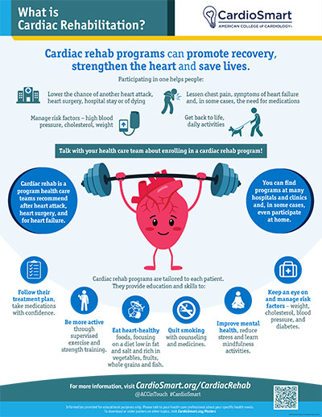

What Is Cardiac Rehabilitation?
Cardiac rehabilitation “cardiac rehab” is a medically supervised program of exercise, education, and support designed to help you recover and get stronger after a heart event or procedure. It is one of the most effective — yet underused — treatments in heart medicine. Participating can lower your risk of future heart problems and dramatically improve how you feel.
What Cardiac Rehab Is
After a heart attack, heart surgery, a stent, or a diagnosis like heart failure, it is common to feel unsure how much activity is safe. Cardiac rehab takes away that guesswork. You exercise on equipment while a team monitors your heart rate and rhythm, blood pressure, and how you feel — so you build strength safely. You also learn practical skills for living healthier and get emotional support.
It is typically a structured program of up to 36 sessions over roughly 12 weeks, held at a hospital or outpatient center. Some programs now offer home-based options too.

Who Benefits
- After a heart attack.
- After coronary bypass surgery (CABG).
- After stenting (percutaneous coronary intervention).
- With stable angina or coronary artery disease.
- With heart failure.
- After a heart valve operation or procedure.
- After a pacemaker or ICD.
If you've had any of these, ask about a referral. Most people are surprised by how much it helps — both physically and mentally.
What It Involves
| Component | What it does |
|---|---|
| Supervised exercise | Treadmill, bike, and strength work while your heart is monitored. |
| Education | Practical lessons on heart-healthy eating, medications, blood pressure, and cholesterol. |
| Lifestyle support | Help with weight, stress, sleep, and quitting smoking. |
| Emotional support | A chance to talk through fear and anxiety after a heart event, often with others in the same situation. |
The Benefits
- Lower risk of another event. Rehab reduces the chance of a future heart attack or cardiac death.
- Better fitness. You'll regain strength and stamina faster and more safely than doing it alone.
- Better control of blood pressure, cholesterol, weight, and mood.
- Fewer hospital readmissions after a heart event.
- Confidence. You learn what your body can safely do, which reduces fear of activity.
How to Get Started
Cardiac rehab usually begins on a doctor's referral within the first few weeks after your event or procedure. At your visits, ask us: “Could I benefit from cardiac rehab, and how do I get a referral?” It is covered by most insurance plans, including Medicare. We can help coordinate it with a local program near you.
Your Part in Recovery
Cardiac rehab is part of a bigger picture. Between and after sessions, staying active, taking your medications every day, and following your heart-healthy eating plan multiply the benefit. Recovery is a partnership — we guide it, and you drive it.
Key Takeaways
- Cardiac rehab is safe, supervised exercise plus education and support after a heart event.
- Everyone with a recent heart attack, surgery, stent, or heart failure should ask about it.
- It lowers risk, boosts fitness and confidence, and is covered by most insurance.
Reliable Sources
- CardioSmart (American College of Cardiology), Cardiac Rehabilitation — infographic
- American Heart Association, Cardiac Rehab, an Important Part of Recovery
- NHLBI, Cardiac Rehabilitation
This page is for general education only and does not replace advice from your doctor. Ask us whether cardiac rehab is right for you.